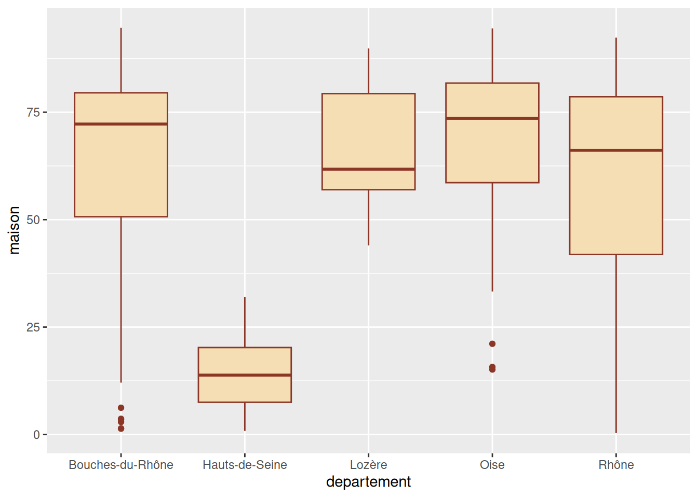
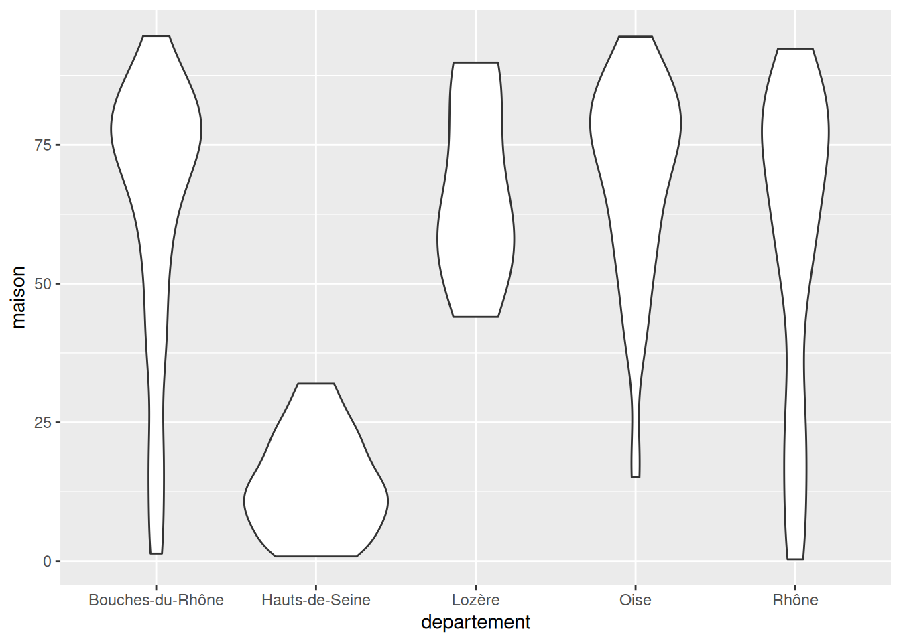
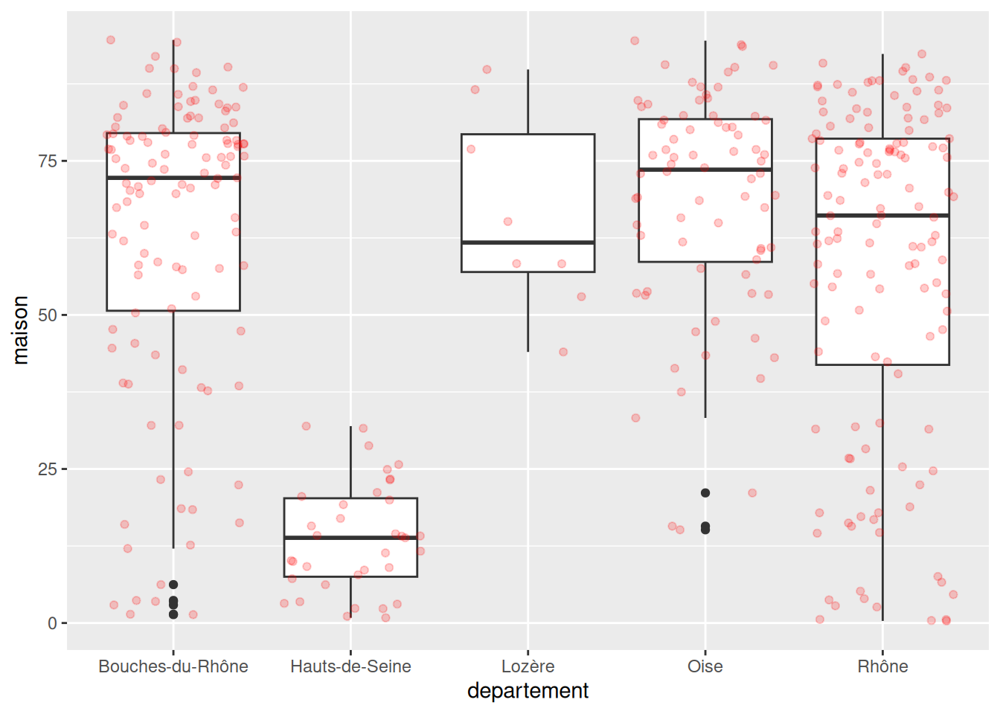
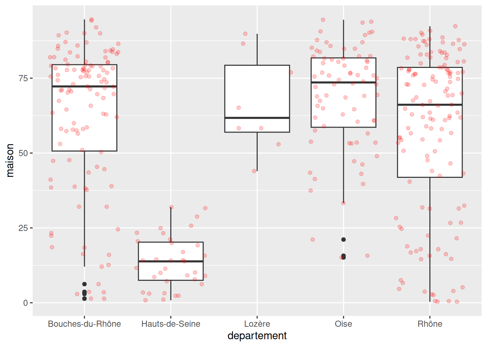
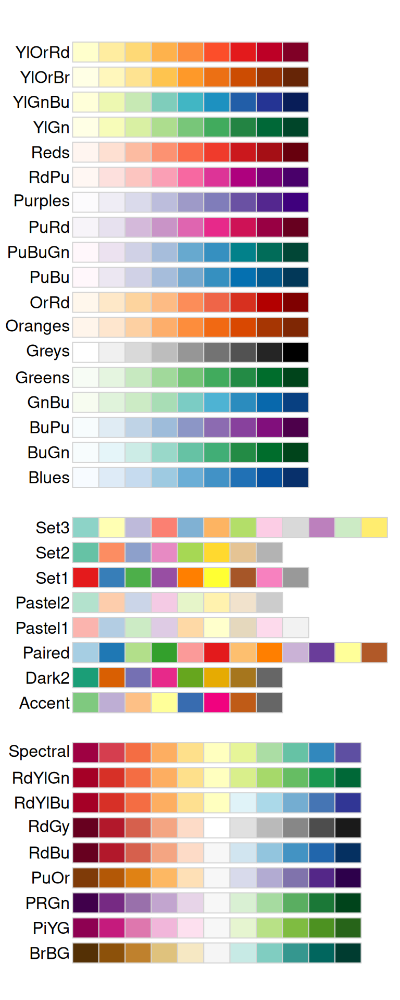
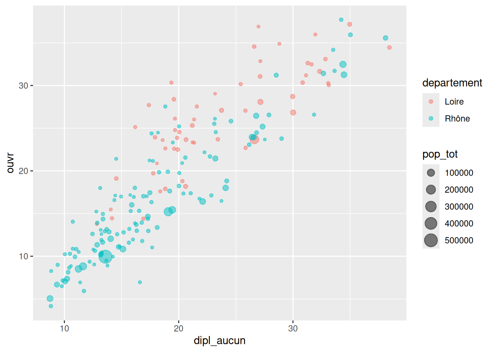
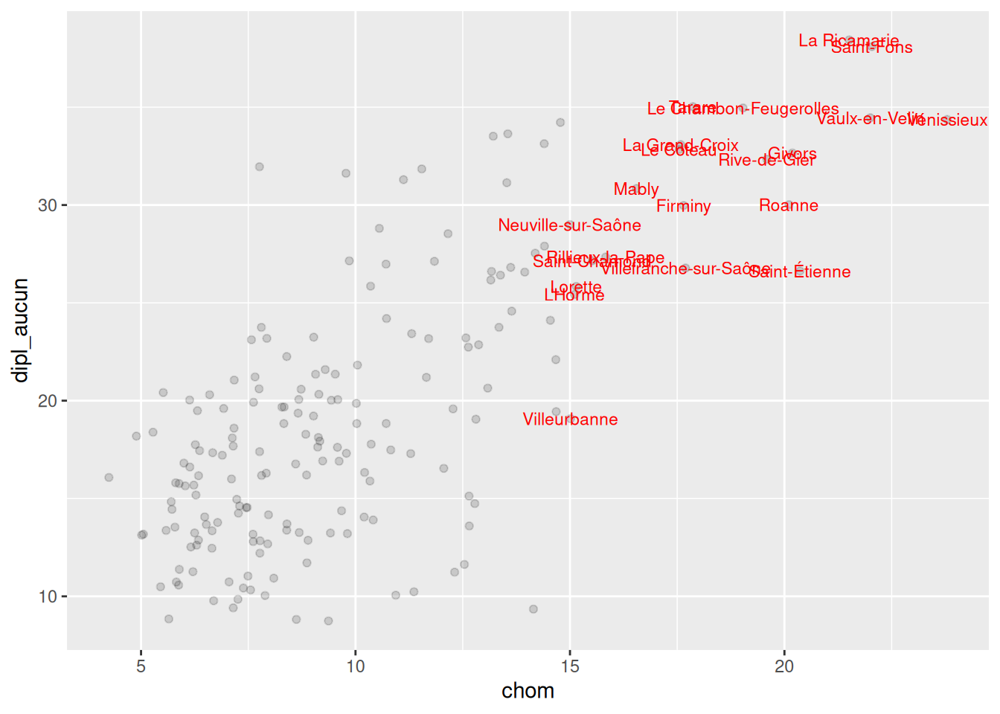

library(tidyverse)8 Visualiser avec ggplot2
ggplot2 est une extension du tidyverse qui permet de générer des graphiques avec une syntaxe cohérente et puissante. Elle nécessite l’apprentissage d’un “mini-langage” supplémentaire, mais permet la construction de graphiques complexes de manière efficace.
Une des particularités de ggplot2 est qu’elle part du principe que les données relatives à un graphique sont stockées dans un tableau de données (data frame, tibble ou autre).
8.1 Préparation
ggplot2 fait partie du coeur du tidyverse, elle est donc chargée automatiquement avec :
On peut également la charger explicitement avec :
library(ggplot2)Dans ce qui suit on utilisera le jeu de données issu du recensement de la population de 2018 inclus dans l’extension questionr (résultats partiels concernant les communes de plus de 2000 habitants de France métropolitaine). On charge ces données et on en extrait les données de 5 départements (l’utilisation de la fonction filter sera expliquée Section 10.2.2) :
library(questionr)
data(rp2018)
rp <- filter(
rp2018,
departement %in% c("Oise", "Rhône", "Hauts-de-Seine", "Lozère", "Bouches-du-Rhône")
)8.2 Initialisation
Un graphique ggplot2 s’initialise à l’aide de la fonction ggplot(). Les données représentées graphiquement sont toujours issues d’un tableau de données (data frame ou tibble), qu’on passe en argument data à la fonction :
ggplot(data = rp)
## Ou, équivalent
ggplot(rp)On a défini la source de données, il faut maintenant ajouter des éléments de représentation graphique. Ces éléments sont appelés des geom, et on les ajoute à l’objet graphique de base avec l’opérateur +.
Un des geom les plus simples est geom_histogram. On peut l’ajouter de la manière suivante :
ggplot(rp) + geom_histogram()Reste à indiquer quelle donnée nous voulons représenter sous forme d’histogramme. Cela se fait à l’aide d’arguments passés via la fonction aes(). Ici nous avons un paramètre à renseigner, x, qui indique la variable à représenter sur l’axe des x (l’axe horizontal). Ainsi, si on souhaite représenter la distribution des communes du jeu de données selon le pourcentage de cadres dans leur population active (variable cadres), on pourra faire :
ggplot(rp) + geom_histogram(aes(x = cadres))Si on veut représenter une autre variable, il suffit de changer la valeur de x :
ggplot(rp) + geom_histogram(aes(x = ouvr))
Note
Quand on spécifie une variable, inutile d’indiquer le nom du tableau de données sous la forme rp$ouvr, car ggplot2 recherche automatiquement la variable dans le tableau de données indiqué avec le paramètre data. On peut donc se contenter de ouvr.
Certains geom prennent plusieurs paramètres. Ainsi, si on veut représenter un nuage de points, on peut le faire en ajoutant un geom_point. On doit alors indiquer à la fois la position en x (la variable sur l’axe horizontal) et en y (la variable sur l’axe vertical) de ces points, il faut donc passer ces deux arguments à aes() :
ggplot(rp) + geom_point(aes(x = dipl_sup, y = cadres))
On peut modifier certains attributs graphiques d’un geom en lui passant des arguments supplémentaires. Par exemple, pour un nuage de points, on peut modifier la couleur des points avec l’argument color, leur taille avec l’argument size, et leur transparence avec l’argument alpha :
ggplot(rp) +
geom_point(
aes(x = dipl_sup, y = cadres),
color = "darkgreen", size = 3, alpha = 0.3
)On notera que dans ce cas les arguments sont dans la fonction geom mais à l’extérieur du aes(). Plus d’explications sur ce point dans quelques instants.
8.3 Exemples de geom
Il existe un grand nombre de geom, décrits en détail dans la documentation officielle. Outre les geom_histogram et geom_point que l’on vient de voir, on pourra noter les geom suivants.
8.3.1 geom_boxplot
geom_boxplot permet de représenter des boîtes à moustaches. On lui passe en y la variable numérique dont on veut étudier la répartition, et en x la variable qualitative contenant les classes qu’on souhaite comparer. Ainsi, si on veut comparer la répartition du pourcentage de maisons en fonction du département de la commune, on pourra faire :
ggplot(rp) + geom_boxplot(aes(x = departement, y = maison))On peut personnaliser la présentation avec différents argument supplémentaires comme fill ou color :
ggplot(rp) +
geom_boxplot(
aes(x = departement, y = maison),
fill = "wheat", color = "tomato4"
)
Un autre argument utile, varwidth, permet de faire varier la largeur des boîtes en fonction des effectifs de la classe (donc, ici, en fonction du nombre de communes de chaque département) :
ggplot(rp) +
geom_boxplot(aes(x = departement, y = maison), varwidth = TRUE)8.3.2 geom_violin
geom_violin est très semblable à geom_boxplot, mais utilise des graphes en violon à la place des boîtes à moustache.
ggplot(rp) + geom_violin(aes(x = departement, y = maison))
Les graphes en violon peuvent donner une lecture plus fine des différences de distribution selon les classes. Comme pour les graphiques de densité, on peut faire varier le niveau de “détail” de la représentation en utilisant l’argument bw (bande passante).
ggplot(rp) +
geom_violin(
aes(x = departement, y = maison),
bw = 2
)8.3.3 geom_bar et geom_col
geom_bar permet de produire un graphique en bâtons (barplot). On lui passe en x la variable qualitative dont on souhaite représenter l’effectif de chaque modalité.
Par exemple, si on veut afficher le nombre de communes de notre jeu de données pour chaque département :
ggplot(rp) + geom_bar(aes(x = departement))Si on préfère avoir un graphique en barres horizontales, il suffit de passer la variable comme attribut y plutôt que x.
ggplot(rp) + geom_bar(aes(y = departement))Une autre possibilité est d’utiliser coord_flip(), qui permet d’intervertir l’axe horizontal et l’axe vertical.
ggplot(rp) +
geom_bar(aes(x = departement)) +
coord_flip()
À noter que coord_flip() peut s’appliquer à n’importe quel graphique ggplot2.
Parfois, on a déjà calculé le tri à plat de la variable à représenter. Dans ce cas on souhaite représenter les effectifs directement, sans les calculer.
C’est le cas par exemple si on a les données sous la forme suivante dans un tableau de données nommé tab :
tab
#> departement n
#> 1 Bouches-du-Rhône 115
#> 2 Hauts-de-Seine 35
#> 3 Lozère 8
#> 4 Oise 76
#> 5 Rhône 132Dans ce cas on peut utiliser geom_col. Il faut alors spécifier, en plus de l’argument x, un argument y indiquant la variable contenant la hauteur des barres. Dans notre exemple, il s’agit de la variable n.
ggplot(tab) + geom_col(aes(x = departement, y = n))Que ce soit pour geom_bar ou geom_col, on peut modifier l’apparence du graphique en passant des arguments supplémentaires comme fill ou width.
ggplot(rp) +
geom_bar(
aes(x = departement),
fill = "darkblue", width = .5
)8.3.4 geom_text
geom_text permet d’afficher des étiquettes de texte. On doit lui fournir trois paramètres dans aes : x et y pour la position des étiquettes, et label pour leur texte.
Par exemple, si on souhaite représenter le nuage croisant la part des diplômés du supérieur et la part de cadres, mais en affichant le nom de la commune (variable commune) plutôt qu’un simple point, on peut faire :
ggplot(rp) +
geom_text(
aes(x = dipl_sup, y = cadres, label = commune)
)On peut personnaliser l’apparence et la position du texte avec des arguments comme size, color, etc.
ggplot(rp) +
geom_text(
aes(x = dipl_sup, y = cadres, label = commune),
color = "darkred", size = 2
)8.3.5 geom_label
geom_label est identique à geom_text, mais avec une présentation un peu différente.
ggplot(rp) + geom_label(aes(x = dipl_sup, y = cadres, label = commune))
8.3.6 geom_density
geom_density permet d’afficher l’estimation de densité d’une variable numérique. Son usage est similaire à celui de geom_histogram.
Ainsi, si on veut afficher la densité de la répartition de la part des cadres dans les communes de notre jeu de données :
ggplot(rp) + geom_density(aes(x = cadres))On peut utiliser différents arguments pour ajuster le calcul de l’estimation de densité, parmi lesquels kernel et bw (voir la page d’aide de la fonction density pour plus de détails). bw (abbréviation de bandwidth, bande passante) permet de régler la “finesse” de l’estimation de densité, un peu comme le choix du nombre de classes dans un histogramme :
ggplot(rp) + geom_density(aes(x = cadres), bw = 1)8.3.7 geom_line
geom_line trace des lignes connectant les différentes observations entre elles. Il est notamment utilisé pour la représentation de séries temporelles. On passe à geom_line deux paramètres : x et y. Les observations sont alors connectées selon l’ordre des valeurs passées en x.
Comme il n’y a pas de données adaptées pour ce type de représentation dans notre jeu de données d’exemple, on va utiliser ici le jeu de données economics inclus dans ggplot2 et représenter l’évolution du taux de chômage aux États-Unis (variable unemploy) dans le temps (variable date) :
data("economics")
economics
#> # A tibble: 574 × 6
#> date pce pop psavert uempmed unemploy
#> <date> <dbl> <dbl> <dbl> <dbl> <dbl>
#> 1 1967-07-01 507. 198712 12.6 4.5 2944
#> 2 1967-08-01 510. 198911 12.6 4.7 2945
#> 3 1967-09-01 516. 199113 11.9 4.6 2958
#> 4 1967-10-01 512. 199311 12.9 4.9 3143
#> 5 1967-11-01 517. 199498 12.8 4.7 3066
#> 6 1967-12-01 525. 199657 11.8 4.8 3018
#> 7 1968-01-01 531. 199808 11.7 5.1 2878
#> 8 1968-02-01 534. 199920 12.3 4.5 3001
#> 9 1968-03-01 544. 200056 11.7 4.1 2877
#> 10 1968-04-01 544 200208 12.3 4.6 2709
#> # ℹ 564 more rowsggplot(economics) + geom_line(aes(x = date, y = unemploy))
8.3.8 geom_hex et geom_bin2d
Lorsque le nombre de points est important, la représentation sous forme de nuage peut vite devenir illisible : la superposition des données empêche de voir précisément leur répartition.
ggplot(rp2018) + geom_point(aes(x = cadres, y = dipl_sup))Dans ces cas-là, on peut utiliser geom_bin2d, qui va créer une grille sur toute la zone du graphique et colorier chaque carré selon le nombre de points qu’il contient (les carrés n’en contenant aucun restant transparents).
ggplot(rp2018) +
geom_bin2d(aes(x = cadres, y = dipl_sup))Une variante fonctionnant de manière très semblable est geom_hex, qui elle crée une grille constituée d’hexagones.
ggplot(rp2018) +
geom_hex(aes(x = cadres, y = dipl_sup))
Dans les deux cas, on peut faire varier le nombre de zones, et donc la finesse du “quadrillage”, en utilisant l’argument bins (dont la valeur par défaut est 30).
ggplot(rp2018) +
geom_bin2d(
aes(x = cadres, y = dipl_sup),
bins = 50
)ggplot(rp2018) +
geom_hex(
aes(x = cadres, y = dipl_sup),
bins = 70
)8.4 Mappages
Un mappage, dans ggplot2, est une mise en relation entre un attribut graphique du geom (position, couleur, taille…) et une variable du tableau de données.
Ces mappages sont passés aux différents geom via la fonction aes() (abbréviation d’aesthetic).
8.4.1 Exemples de mappages
On a déjà vu les mappages x et y pour un nuage de points. Ceux-ci signifient que la position d’un point donné horizontalement (x) et verticalement (y) dépend de la valeur des variables passées comme arguments x et y dans aes().
ggplot(rp) +
geom_point(
aes(x = dipl_sup, y = cadres)
)Mais on peut ajouter d’autres mappages. Par exemple, color permet de faire varier la couleur des points automatiquement en fonction des valeurs d’une troisième variable. Ainsi, on peut vouloir colorer les points selon le département de la commune correspondante.
ggplot(rp) +
geom_point(
aes(x = dipl_sup, y = cadres, color = departement)
)
On peut aussi faire varier la taille des points avec size. Ici, la taille dépend de la population totale de la commune :
ggplot(rp) +
geom_point(
aes(x = dipl_sup, y = cadres, color = departement, size = pop_tot)
)On peut même associer la transparence des points à une variable avec alpha :
ggplot(rp) +
geom_point(
aes(x = dipl_sup, y = cadres, color = departement, size = pop_tot, alpha = maison)
)Chaque geom possède sa propre liste de mappages.
8.4.2 aes() or not aes() ?
Comme on l’a déjà vu, parfois on souhaite changer un attribut sans le relier à une variable : c’est le cas par exemple si on veut représenter tous les points en rouge. Dans ce cas on utilise toujours l’attribut color, mais comme il ne s’agit pas d’un mappage, on le définit à l’extérieur de la fonction aes().
ggplot(rp) +
geom_point(
aes(x = dipl_sup, y = cadres),
color = "red"
)Par contre, si on veut faire varier la couleur en fonction des valeurs prises par une variable, on réalise un mappage, et on doit donc placer l’attribut color à l’intérieur de aes().
ggplot(rp) +
geom_point(
aes(x = dipl_sup, y = cadres, color = departement)
)On peut mélanger attributs liés à une variable (mappage, donc dans aes()) et attributs constants (donc à l’extérieur). Dans l’exemple suivant, la taille varie en fonction de la variable pop_tot, mais la couleur est constante pour tous les points.
ggplot(rp) +
geom_point(
aes(x = dipl_sup, y = cadres, size = pop_tot),
color = "royalblue"
)
Avertissement
La règle est donc simple mais très importante :
Si on établit un lien entre les valeurs d’une variable et un attribut graphique, on définit un mappage, et on le déclare dans aes(). Sinon, on modifie l’attribut de la même manière pour tous les points, et on le définit en-dehors de la fonction aes().
8.4.3 geom_bar et position
Un des mappages possibles de geom_bar est l’attribut fill, qui permet de tracer des barres de couleur différentes selon les modalités d’une deuxième variable :
ggplot(rp) + geom_bar(aes(x = departement, fill = pop_cl))L’attribut position de geom_bar permet d’indiquer comment les différentes barres doivent être positionnées. Par défaut l’argument vaut position = "stack" et elles sont donc “empilées”. Mais on peut préciser position = "dodge" pour les mettre côte à côte.
ggplot(rp) +
geom_bar(
aes(x = departement, fill = pop_cl),
position = "dodge"
)Ou encore position = "fill" pour représenter non plus des effectifs, mais des proportions.
ggplot(rp) +
geom_bar(
aes(x = departement, fill = pop_cl),
position = "fill"
)Là encore, on peut utiliser coord_flip() si on souhaite une visualisation avec des barres horizontales.
ggplot(rp) +
geom_bar(
aes(x = departement, fill = pop_cl),
position = "fill"
) +
coord_flip()8.5 Représentation de plusieurs geom
On peut représenter plusieurs geom simultanément sur un même graphique, il suffit de les ajouter à tour de rôle avec l’opérateur +.
Par exemple, on peut superposer la position des points au-dessus d’un boxplot. On va pour cela ajouter un geom_point après avoir ajouté notre geom_boxplot.
ggplot(rp) +
geom_boxplot(aes(x = departement, y = maison)) +
geom_point(
aes(x = departement, y = maison),
col = "red", alpha = 0.2
)
Note
Quand une commande ggplot2 devient longue, il peut être plus lisible de la répartir sur plusieurs lignes. Dans ce cas, il faut penser à placer l’opérateur + en fin de ligne, afin que R comprenne que la commande n’est pas complète et qu’il prenne en compte la suite.
Pour un résultat un peu plus lisible, on peut remplacer geom_point par geom_jitter, qui disperse les points horizontalement et facilite leur visualisation.
ggplot(rp) +
geom_boxplot(aes(x = departement, y = maison)) +
geom_jitter(
aes(x = departement, y = maison),
col = "red", alpha = 0.2
)
Pour simplifier un peu le code, plutôt que de déclarer les mappages dans chaque geom, on peut les déclarer dans l’appel à ggplot(). Ils seront automatiquement “hérités” par les geom ajoutés (sauf s’ils redéfinissent les mêmes mappages).
ggplot(rp, aes(x = departement, y = maison)) +
geom_boxplot() +
geom_jitter(color = "red", alpha = 0.2)
Autre exemple, on peut vouloir ajouter à un nuage de points une ligne de régression linéaire à l’aide de geom_smooth :
ggplot(rp, aes(x = dipl_sup, y = cadres)) +
geom_point(alpha = 0.2) +
geom_smooth(method = "lm")
#> `geom_smooth()` using formula = 'y ~ x'Et on peut même superposer une troisième visualisation de la répartition des points dans l’espace avec geom_density2d :
ggplot(rp, aes(x = dipl_sup, y = cadres)) +
geom_point(alpha = 0.2) +
geom_density2d(color = "red") +
geom_smooth(method = "lm")
#> `geom_smooth()` using formula = 'y ~ x'8.5.1 Plusieurs sources de données
On peut associer à différents geom des sources de données différentes. Supposons qu’on souhaite afficher sur un nuage de points les noms des communes de plus de 50000 habitants. On commencer par créer un tableau de données contenant uniquement ces communes à l’aide de la fonction filter.
com50 <- filter(rp, pop_tot >= 50000)On fait ensuite le nuage de points comme précédemment :
ggplot(data = rp, aes(x = dipl_sup, y = cadres)) +
geom_point(alpha = 0.2)Pour superposer les noms de communes de plus de 50 000 habitants, on peut ajouter un geom_text, mais en spécifiant que les données proviennent du nouveau tableau com50 et non de notre tableau initial rp. On le fait en passant un argument data spécifique à geom_text :
ggplot(data = rp, aes(x = dipl_sup, y = cadres)) +
geom_point(alpha = 0.2) +
geom_text(
data = com50, aes(label = commune),
color = "red", size = 3
)Ainsi, on obtient un graphique avec deux geom superposés, mais dont les données proviennent de deux tableaux différents.
8.6 Faceting
Le faceting permet d’effectuer plusieurs fois le même graphique selon les valeurs d’une ou plusieurs variables qualitatives.
Par exemple, on a vu qu’on peut représenter l’histogramme du pourcentage de cadres dans nos communes avec le code suivant :
ggplot(data = rp) +
geom_histogram(aes(x = cadres))
On souhaite comparer cette distribution de la part des cadres selon le département, et donc faire un histogramme pour chacun de ces départements. C’est ce que permettent les fonctions facet_wrap et facet_grid.
facet_wrap prend un paramètre de la forme vars(variable), où variable est le nom de la variable en fonction de laquelle on souhaite faire les différents graphiques. Ceux-ci sont alors affichés les uns à côté des autres et répartis automatiquement dans la page.
ggplot(data = rp) +
geom_histogram(aes(x = cadres)) +
facet_wrap(vars(departement))Pour facet_grid, les graphiques sont disposés selon une grille. La fonction prend alors deux arguments, rows et cols, auxquels on passe les variables à afficher en ligne ou en colonne via la fonction vars().
ggplot(data = rp) +
geom_histogram(aes(x = cadres)) +
facet_grid(rows = vars(departement))Un des intérêts du faceting dans ggplot2 est que tous les graphiques générés ont les mêmes échelles, ce qui permet une comparaison directe.
Enfin, notons qu’on peut même faire du faceting sur plusieurs variables à la fois. On peut par exemple faire des histogrammes de la répartition de la part des cadres pour chaque croisement des variables departement et pop_cl :
ggplot(data = rp) +
geom_histogram(aes(x = cadres)) +
facet_grid(
rows = vars(departement), cols = vars(pop_cl)
)L’histogramme en haut à gauche représente la répartition du pourcentage de cadres parmi les communes de 2000 à 3000 habitants dans les Bouches-du-Rhône, etc.
8.7 Scales
On a vu qu’avec ggplot2 on définit des mappages entre des attributs graphiques (position, taille, couleur, etc.) et des variables d’un tableau de données. Ces mappages sont définis, pour chaque geom, via la fonction aes().
Les scales dans ggplot2 permettent de modifier la manière dont un attribut graphique va être relié aux valeurs d’une variable, et dont la légende correspondante va être affichée. Par exemple, pour l’attribut color, on pourra définir la palette de couleur utilisée. Pour size, les tailles minimales et maximales, etc.
Pour modifier une scale existante, on ajoute un nouvel élément à notre objet ggplot2 avec l’opérateur +. Cet élément prend la forme scale_<attribut>_<type>.
Voyons tout de suite quelques exemples.
8.7.1 scale_size
Si on souhaite modifier les tailles minimales et maximales des objets quand on a effectué un mappage de type size, on peut utiliser la fonction scale_size et son argument range.
ggplot(rp) +
geom_point(aes(x = dipl_sup, y = cadres, size = pop_tot)) +
scale_size(range = c(0, 20))À comparer par exemple à :
ggplot(rp) +
geom_point(aes(x = dipl_sup, y = cadres, size = pop_tot)) +
scale_size(range = c(2, 8))On peut ajouter d’autres paramètres à scale_size. Le premier argument est toujours le titre donné à la légende.
ggplot(rp) +
geom_point(aes(x = dipl_sup, y = cadres, size = pop_tot)) +
scale_size(
"Population",
range = c(0, 15)
)On peut aussi définir manuellement les éléments de légende représentés.
ggplot(rp) +
geom_point(aes(x = dipl_sup, y = cadres, size = pop_tot)) +
scale_size(
"Population",
range = c(0, 15),
breaks = c(1000, 5000, 10000, 50000)
)8.7.2 scale_x, scale_y
Les scales scale_x_<type> et scale_y_<type> modifient les axes x et y du graphique.
scale_x_continuous et scale_y_continuous s’appliquent lorsque la variable x ou y est numérique (quantitative).
C’est le cas de notre nuage de points croisant part de cadres et part de diplômés du supérieur.
ggplot(rp) +
geom_point(aes(x = dipl_sup, y = cadres))
Comme on représente des pourcentages, on peut vouloir forcer les axes x et y à s’étendre des valeurs 0 à 100. On peut le faire en ajoutant un élément scale_x_continuous et un élément scale_y_continuous, et en utilisant leur argument limits.
ggplot(rp) +
geom_point(aes(x = dipl_sup, y = cadres)) +
scale_x_continuous(limits = c(0,100)) +
scale_y_continuous(limits = c(0,100))Là aussi, on peut modifier les étiquettes des axes en indiquant une chaîne de caractères en premier argument.
ggplot(rp) +
geom_point(aes(x = dipl_sup, y = cadres)) +
scale_x_continuous("Part des diplômés du supérieur (%)", limits = c(0,100)) +
scale_y_continuous("Part des cadres (%)", limits = c(0,100))On peut utiliser scale_x_log10 et scale_y_log10 pour passer un axe à une échelle logarithmique.
ggplot(rp) +
geom_point(aes(x = dipl_sup, y = cadres)) +
scale_x_log10("Diplômés du supérieur")scale_x_discrete et scale_y_discrete s’appliquent lorsque l’axe correspond à une variable discrète (qualitative). C’est le cas par exemple de l’axe des x dans un diagramme en barres.
ggplot(rp) +
geom_bar(aes(x = departement)) +
scale_x_discrete("Département")L’argument limits de scale_x_discrete permet d’indiquer quelles valeurs sont affichées et dans quel ordre.
ggplot(rp) +
geom_bar(aes(x = departement)) +
scale_x_discrete("Département", limits = c("Oise", "Lozère", "Rhône"))
#> Warning: Removed 150 rows containing non-finite values (`stat_count()`).8.7.3 scale_color, scale_fill
Ces scales permettent, entre autre, de modifier les palettes de couleur utilisées pour le dessin (color) ou le remplissage (fill) des éléments graphiques. Dans ce qui suit, pour chaque fonction scale_color présentée il existe une fonction scale_fill équivalente et avec en général les mêmes arguments.
8.7.3.1 Variables quantitatives
Le graphique suivant colore les points selon la valeur d’une variable numérique quantitative (ici la part de chômeurs) :
ggplot(rp) +
geom_point(aes(x = dipl_sup, y = cadres, color = chom))On peut modifier les couleurs utilisées avec les arguments low et high de la fonction scale_color_gradient. Ici on souhaite que la valeur la plus faible soit blanche, et la plus élevée rouge :
ggplot(rp) +
geom_point(aes(x = dipl_sup, y = cadres, color = chom)) +
scale_color_gradient("Taux de chômage", low = "white", high = "red")On peut aussi utiliser des palettes prédéfinies. L’une des plus populaires est la palette viridis, accessible en utilisant scale_color_viridis_c :
ggplot(rp) +
geom_point(aes(x = dipl_sup, y = cadres, color = chom)) +
scale_color_viridis_c("Taux de chômage")viridis propose également trois autres palettes, magma, inferno et plasma, accessibles via l’argument option :
ggplot(rp) +
geom_point(aes(x = dipl_sup, y = cadres, color = chom)) +
scale_color_viridis_c("Taux de chômage", option = "plasma")On peut aussi utiliser scale_color_distiller, qui transforme une des palettes pour variable qualitative de scale_color_brewer en palette continue pour variable numérique :
ggplot(rp) +
geom_point(aes(x = dipl_sup, y = cadres, color = chom)) +
scale_color_distiller("Taux de chômage", palette = "Spectral")
La liste des palettes de scale_color_brewer est indiquée en fin de section suivante.
8.7.3.2 Variables qualitatives
Si on a fait un mappage avec une variable discrète (qualitative), comme ici avec le département :
ggplot(rp) +
geom_point(aes(x = dipl_sup, y = cadres, color = departement))
Une première possibilité est de modifier la palette manuellement avec scale_color_manual et son argument values :
ggplot(rp) +
geom_point(aes(x = dipl_sup, y = cadres, color = departement)) +
scale_color_manual(
"Département",
values = c("red", "#FFDD45", rgb(0.1,0.2,0.6), "darkgreen", "grey80")
)
Note
L’exemple précédent montre plusieurs manières de définir manuellement des couleurs dans R :
- Par code hexadécimal :
"#FFDD45" - En utilisant la fonction
rgbet en spécifiant les composantes rouge, vert, bleu par des nombres entre 0 et 1 (et optionnellement une quatrième composante d’opacité, toujours entre 0 et 1) :rgb(0.1,0.2,0.6) - En donnant un nom de couleur :
"red","darkgreen"
La liste complète des noms de couleurs connus par R peut être obtenu avec la fonction colors(). Vous pouvez aussi retrouver en ligne la liste des couleurs et leur nom (PDF).
Il est cependant souvent plus pertinent d’utiliser des palettes prédéfinies. Celles du site Colorbrewer, initialement prévues pour la cartographie, permettent une bonne lisibilité, et peuvent être adaptées pour certains types de daltonisme.
Ces palettes s’utilisent via la fonction scale_color_brewer, en passant le nom de la palette via l’argument palette. Par exemple, si on veut utiliser la palette Set1 :
ggplot(rp) +
geom_point(aes(x = dipl_sup, y = cadres, color = departement)) +
scale_color_brewer("Département", palette = "Set1")Le graphique suivant, accessible via la fonction display.brewer.all(), montre la liste de toutes les palettes disponibles via scale_color_brewer. Elles sont réparties en trois familles : les palettes séquentielles (pour une variable quantitative), les palettes qualitatives, et les palettes divergentes (typiquement pour une variable quantitative avec une valeur de référence, souvent 0, et deux palettes continues distinctes pour les valeurs inférieures et pour les valeurs supérieures).
RColorBrewer::display.brewer.all()
Il existe d’autres méthodes pour définir les couleurs : pour plus d’informations on pourra se reporter à l’article de la documentation officielle sur ce sujet.
8.8 Thèmes
Les thèmes permettent de contrôler l’affichage de tous les éléments du graphique qui ne sont pas reliés aux données : titres, grilles, fonds, etc.
Il existe un certain nombre de thèmes préexistants, par exemple le thème theme_bw :
ggplot(data = rp) +
geom_histogram(aes(x = cadres)) +
theme_bw()Ou le thème theme_minimal :
ggplot(data = rp) +
geom_histogram(aes(x = cadres)) +
theme_minimal()On peut cependant modifier manuellement les différents éléments. Par exemple, les fonctions ggtitle, xlab et ylab permettent d’ajouter ou de modifier le titre du graphique, ainsi que les étiquettes des axes x et y :
ggplot(data = rp) +
geom_histogram(aes(x = cadres)) +
ggtitle("Un bien bel histogramme") +
xlab("Pourcentage de cadres") +
ylab("Effectif")Les éléments personnalisables étant nombreux, un bon moyen de se familiariser avec tous les arguments est sans doute l’addin RStudio ggThemeAssist. Pour l’utiliser il suffit d’installer le package du même nom, de sélectionner dans son script RStudio le code correspondant à un graphique ggplot2, puis d’aller dans le menu Addins et choisir ggplot Theme Assistant. Une interface graphique s’affiche alors permettant de modifier les différents éléments. Si on clique sur Done, le code sélectionné dans le script est alors automatiquement mis à jour pour correspondre aux modifications effectuées.
Ce qui permet d’obtenir très facilement des résultats extrêmement moches :
ggplot(data = rp) + geom_histogram(aes(x = cadres)) +
theme(panel.grid.major = element_line(colour = "dodgerblue",
size = 0.5, linetype = "dotdash"), axis.title = element_text(family = "serif",
size = 18, face = "italic", colour = "white"),
axis.text = element_text(family = "serif",
size = 15, face = "bold"), axis.text.x = element_text(family = "mono"),
plot.title = element_text(family = "serif"),
legend.text = element_text(family = "serif"),
legend.title = element_text(family = "serif"),
panel.background = element_rect(fill = "coral"),
plot.background = element_rect(fill = "blueviolet"))8.9 L’add-in esquisse
esquisse est un package développé notamment par Victor Perrier de dreamRs et qui fournit une interface graphique pour la construction de graphiques avec ggplot2.
Pour l’utiliser, il faut évidemment préalablement installer l’extension :
install.packages("esquisse")Pour lancer l’interface, ouvrez le menu Addins dans la barre d’outils de RStudio, et cliquez sur ‘ggplot2’ builder1.

Une fenêtre s’ouvre : la première étape consiste à choisir un data frame de votre environnement, et éventuellement à ne sélectionner que certaines de ses variables.
 Une fois le choix effectué, cliquez sur Validate imported data.
Une fois le choix effectué, cliquez sur Validate imported data.
L’interface principale s’affiche alors. La liste des variables du data frame apparaît en haut, et vous pouvez les faire glisser dans les zones X, Y, Fill, Color, Size et Facet pour créer des mappages. Le graphique se met automatiquement à jour.

Par défaut, esquisse sélectionne le type de graphique le plus approprié selon la nature de vos variables. Mais vous pouvez choisir un autre type de graphique à l’aide de l’icône en haut à gauche, parmi onze disponibles (dont Auto):
 .
.
Enfin, une série de menus en bas de l’interface vous permet de personnaliser les titres, les annotations (labels), la présentation ou de filtrer des valeurs de vos variables.
Quand vous avez généré un graphique que vous souhaitez conserver, ouvrez le menu Export & code :

Vous y trouverez le code R correspondant au graphique actuellement affiché. Vous pouvez dès lors le copier pour le coller dans votre script, ou cliquer sur Insert code in script pour l’insérer directement dans votre script à l’endroit où se trouve votre curseur.
esquisse ne propose pas (encore) tous les geom ou toutes les possibilités de ggplot2, mais ça peut être un outil très utile et pratique pour une exploration rapide de données ou lorsqu’on est un peu perdu dans la syntaxe et les fonctions de l’extension.
Pour plus d’informations, vous pouvez vous référer à la page du projet sur GitHub (en anglais).
8.10 Ressources
La documentation officielle (en anglais) de ggplot2 est très complète et accessible en ligne.
Une “antisèche” (en anglais) résumant en deux pages l’ensemble des fonctions et arguments et disponible soit directement depuis RStudio (menu Help > Cheatsheets > Data visualization with ggplot2) ou en ligne.
Les parties Data visualisation et Graphics for communication de l’ouvrage en ligne R for data science, de Hadley Wickham, sont une très bonne introduction à ggplot2.
Plusieurs ouvrages, toujours en anglais, abordent en détail l’utilisation de ggplot2, en particulier ggplot2: Elegant Graphics for Data Analysis, toujours de Hadley Wickham, et le R Graphics Cookbook de Winston Chang.
Le site associé à ce dernier ouvrage comporte aussi pas mal d’exemples et d’informations intéressantes.
Enfin, si ggplot2 présente déjà un très grand nombre de fonctionnalités, il existe aussi un système d’extensions permettant d’ajouter des geom, des thèmes, etc. Le site ggplot2 extensions est une très bonne ressource pour les parcourir et les découvrir, notamment grâce à sa galerie.
8.11 Exercices
Pour les exercices qui suivent, on commence par charger les extensions nécessaires et les données du jeu de données rp2018. On crée alors un objet rp69 comprenant uniquement les communes du Rhône et de la Loire.
library(tidyverse)
library(questionr)
data(rp2018)
rp69 <- filter(rp2018, departement %in% c("Rhône", "Loire"))Exercice 1
Faire un nuage de points croisant le pourcentage de sans diplôme (dipl_aucun) et le pourcentage d’ouvriers (ouvr).
ggplot(rp69) + geom_point(aes(x = dipl_aucun, y = ouvr))Exercice 2
Faire un nuage de points croisant le pourcentage de sans diplôme et le pourcentage d’ouvriers, avec les points en rouge et de transparence 0.2.
ggplot(rp69) +
geom_point(aes(x = dipl_aucun, y = ouvr), color = "red", alpha = 0.2)Exercice 3
Représenter la répartition du pourcentage de propriétaires (variable proprio) selon la taille de la commune en classes (variable pop_cl) sous forme de boîtes à moustaches.
ggplot(rp69) + geom_boxplot(aes(x = pop_cl, y = proprio))Exercice 4
Représenter la répartition du nombre de communes selon la taille de la commune en classes sous la forme d’un diagramme en bâtons.
ggplot(rp69) + geom_bar(aes(x = pop_cl))Exercice 5
Faire un nuage de points croisant le pourcentage de sans diplôme et le pourcentage d’ouvriers. Faire varier la couleur selon le département (departement).
ggplot(rp69) +
geom_point(aes(x = dipl_aucun, y = ouvr, color = departement))Sur le même graphique, faire varier la taille des points selon la population totale de la commune (pop_tot).
ggplot(rp69) +
geom_point(aes(x = dipl_aucun, y = ouvr, color = departement, size = pop_tot))Enfin, toujours sur le même graphique, rendre les points transparents en plaçant leur opacité à 0.5.

ggplot(rp69) +
geom_point(aes(x = dipl_aucun, y = ouvr, color = departement, size = pop_tot), alpha = 0.5)Exercice 6
Représenter la répartition du pourcentage de propriétaires (variable proprio) selon la taille de la commune en classes (variable pop_cl) sous forme de boîtes à moustaches. Faire varier la couleur de remplissage (attribut fill) selon le département.
ggplot(rp69) +
geom_boxplot(aes(x = pop_cl, y = proprio, fill = departement))Exercice 7
Représenter la répartition du nombre de communes selon la taille de la commune en classes (variable pop_cl) sous forme de diagramme en bâtons empilés, avec une couleur différente selon le département.
ggplot(rp69) + geom_bar(aes(x = pop_cl, fill = departement))Faire varier la valeur du paramètre position pour afficher les barres les unes à côté des autres.
ggplot(rp69) +
geom_bar(aes(x = pop_cl, fill = departement),
position = "dodge")Changer à nouveau la valeur du paramètre position pour représenter les proportions de communes de chaque département pour chaque catégorie de taille.

ggplot(rp69) +
geom_bar(aes(x = pop_cl, fill = departement),
position = "fill")Exercice 8
Faire un nuage de points représentant en abscisse le pourcentage de cadres (cadres) et en ordonnée le pourcentage de diplômés du supérieur (dipl_sup). Représenter ce nuage par deux graphiques différents selon le département en utilisant facet_grid.
ggplot(rp69) +
geom_point(aes(x = cadres, y = dipl_sup)) +
facet_grid(cols = vars(departement))Sur le même graphique, faire varier la taille des points selon la population totale de la communes (variable pop_tot) et rendre les points transparents.
ggplot(rp69) +
geom_point(aes(x = cadres, y = dipl_sup, size = pop_tot), alpha = 0.5) +
facet_grid(cols = vars(departement))Exercice 9
Faire le nuage de points croisant pourcentage de chômeurs (chom) et pourcentage de sans diplôme. Y ajouter les noms des communes correspondant (variable commune), en rouge et en taille 2.5 :
ggplot(rp69, aes(x = chom, y = dipl_aucun)) +
geom_point() +
geom_text(aes(label = commune), color = "red", size = 2.5)Exercice 10
Dans le graphique précédent, n’afficher que le nom des communes ayant plus de 15% de chômage.

chom15 <- filter(rp69, chom > 15)
ggplot(rp69, aes(x = chom, y = dipl_aucun)) +
geom_point(alpha = 0.15) +
geom_text(data = chom15, aes(label = commune), color="red", size=3)Vous pouvez aussi lancer la commande
esquisser::esquisse()dans la Console.↩︎